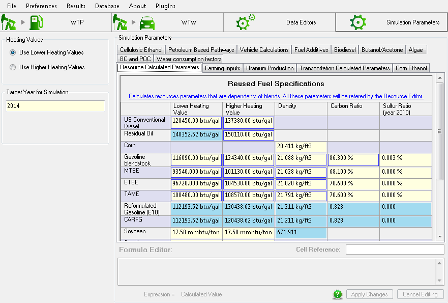
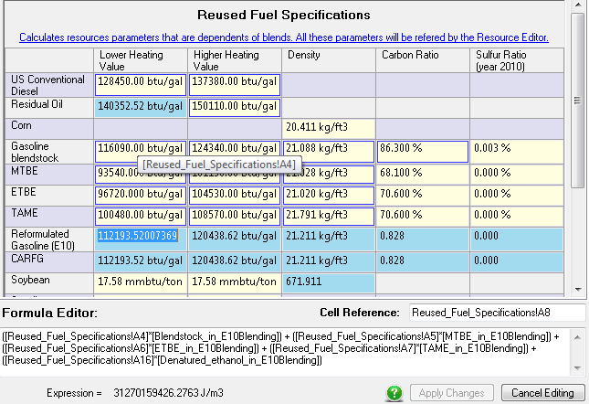

Simulation ParametersThe simulation parameters section of GREET is the place to change a couple of input parameters that are reused in multiple locations. For example this is the place to select weather the higher heating values or lower heating values are used, or which is the target simulation year for the simulations. The simulation parameter section also contains tabs and tables that are containing some other parameters for the simulations, these can be edited and reused across the model in a similar way as how excel cells are reused into formulas.
The simulation parameters section can be accessed by clicking the last large button in the main GREET banner: 
Simulation parameters section
As it can be seen on the picture above GREET is set by default to use the lower heating values and performs simulation for the target year of 2014. This means that for all resources when a conversion is needed in the model to convert to or from an energy value, the lower heating value of the resources will be used. If the year 2014 is selected, the values for time series will automatically select closest year available in the past in the time series. For example if 2005, 2010, and 2015 values exists for a parameter: the model will use 2010 as it is the closest value in the past. On the right side we can see a table containing multiple parameters. The cells have different backgrounds because we make the distinction between values that are calculated or not. The cells with a blue background are calculated by a formula, the cells with a yellow background are values entered without using any other cells or formulas.
Formulas can be entered for parameters by using conventional operators, but also by using specific functions like if() or trigonometric functions (see detailed in the user guide) 
The formula editor allows the user to start typing a parameter name and use the auto-completion feature or click another cell to add that reference to the formula.
Formula editor for a parameter
All parameters have a unique name system wide. That means that formulas can be entered between any of the parameters. However we do not recommend doing that as it adds a lots of confusion and is against the ideology of the software that is to stay simple and efficient. |